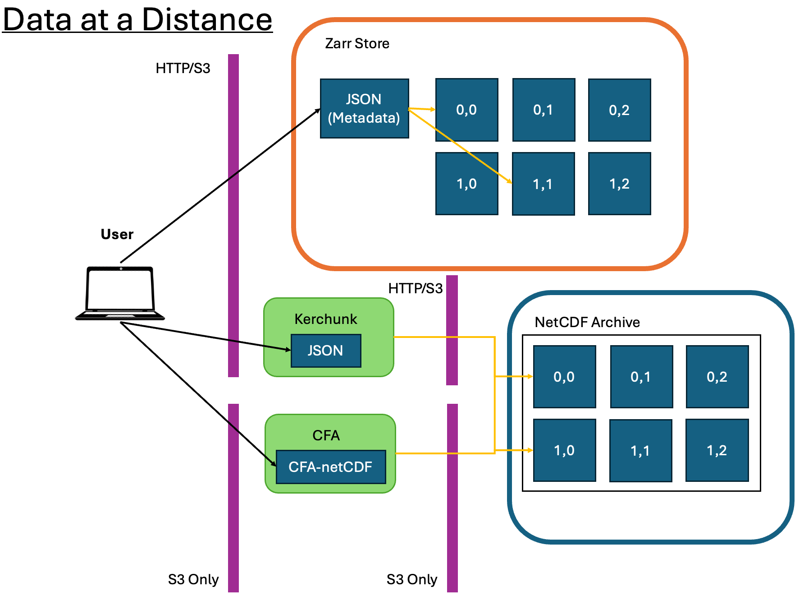

CFA and Distributed Data
Data Archives
The need for cloud-accessible analysis-ready data is increasing due to high demand for cloud-native applications and wider usability of data. Current archival formats and access methods are insufficient for an increasing number of user needs, especially given the volume of data being produced by various projects globally.

The CEDA-operated JASMIN data analysis facility has a current (2024) data archive of more than 30 Petabytes, with more datasets being ingested daily. Around 25% of all datasets are in NetCDF/HDF formats which are well-optimised for HPC architecture, but do not typically perform as well and are not as accessible for cloud-based applications. The standard NetCDF/HDF python readers for example require direct access to the source files, so are not able to open files stored either in Object Storage (S3) or served via a download service, without first downloading the whole file.
Distributed Data
The aim of CFA and aggregating distributed data in general, is to make the access of data more effective when dealing with these vast libraries of data. Directly accessing the platforms, like JASMIN, where the data is stored is not necessarily possible for all users, and we would like to avoid the dependence on download services where GB/TBs of data is copied across multiple sites. Instead, the data may be accessed via a reference/aggregation file which provides the instructions to fetch portions of the data, and applications reading the file are able to load data as needed rather than all at once (Lazy Loading).
Formats which provide effective remote data access are typically referred to as Cloud Optimised Formats (COFs) of which CFA is just one example. Other examples include Zarr and Kerchunk, as in the diagram above. Zarr stores contain individual binary-encoded files for each chunk of data in memory. Opening a Zarr store means accessing the top-level metadata which informs the application reader how the data is structured. Subsequent calls to load the data will then only load the appropriate memory chunks. Kerchunk functions similarly as a pointer to chunks of data in another location, however Kerchunk only references the existing chunk structure within NetCDF files, rather than having each chunk as a separate file.
CFA takes elements of both of these methods; it acts as a reference to existing Archive data like Kerchunk and can function with data stored in Object Storage like Zarr, but the key difference is that the chunks in CFA are just portions of the array, rather than ranges of bytes of compressed/uncompressed data.
CF aggregations
CFA parameters are now included in the CF conventions (as of CF version 1.12 - November 2024), and define how so-called ‘aggregation variables’ should be defined within a CFA-netCDF file. A CFA-netCDF file acts as a reference file to a set of Fragment files (which may be netCDF or other formats), and an appropriate application reader (like cfapyx) is able to read and interpret the aggregated data into the proper set of variables and dimensions that cover the extent of the set of Fragment files. Accessing a subset of the data is then made more efficient as the application reader can fetch only the portions of the array required by the user for any particular computation.